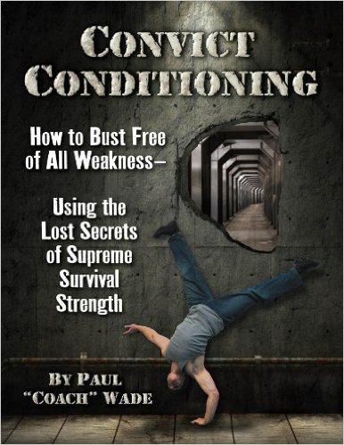
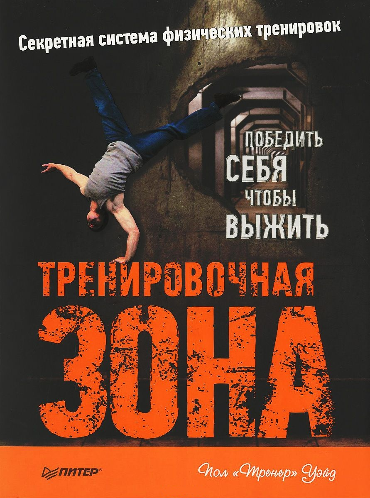
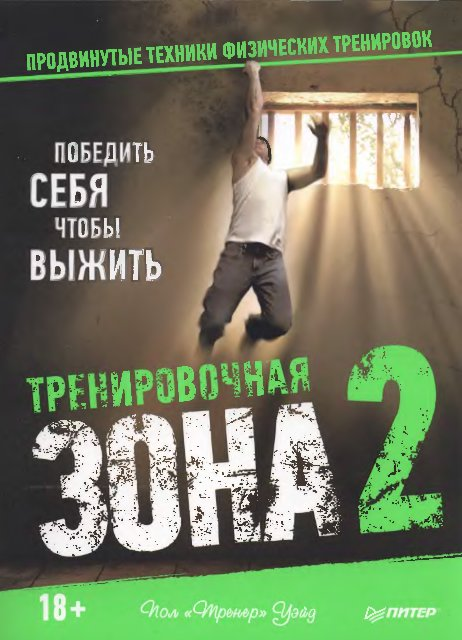
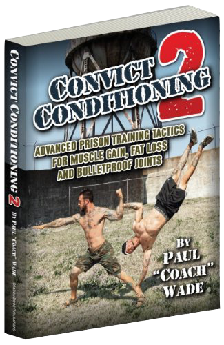
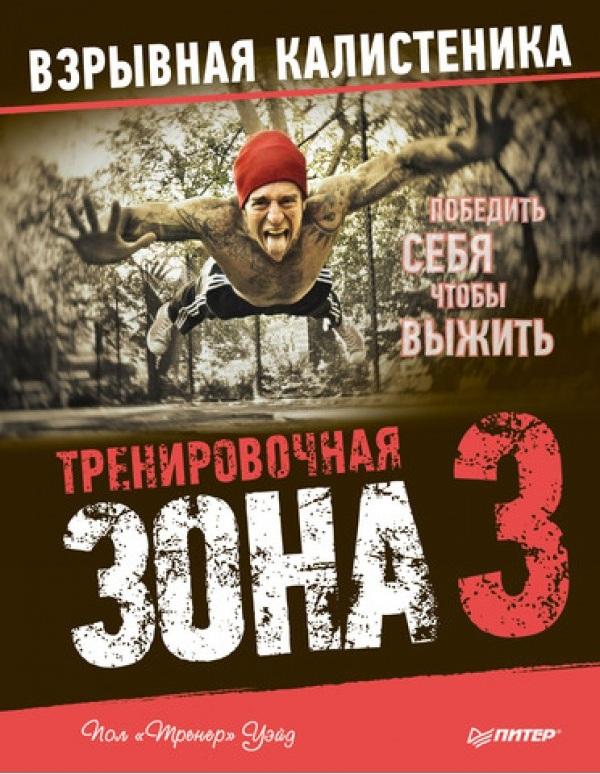
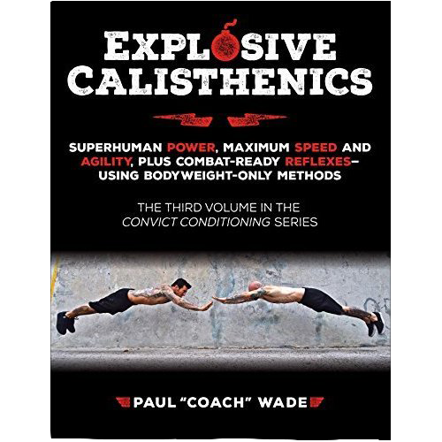
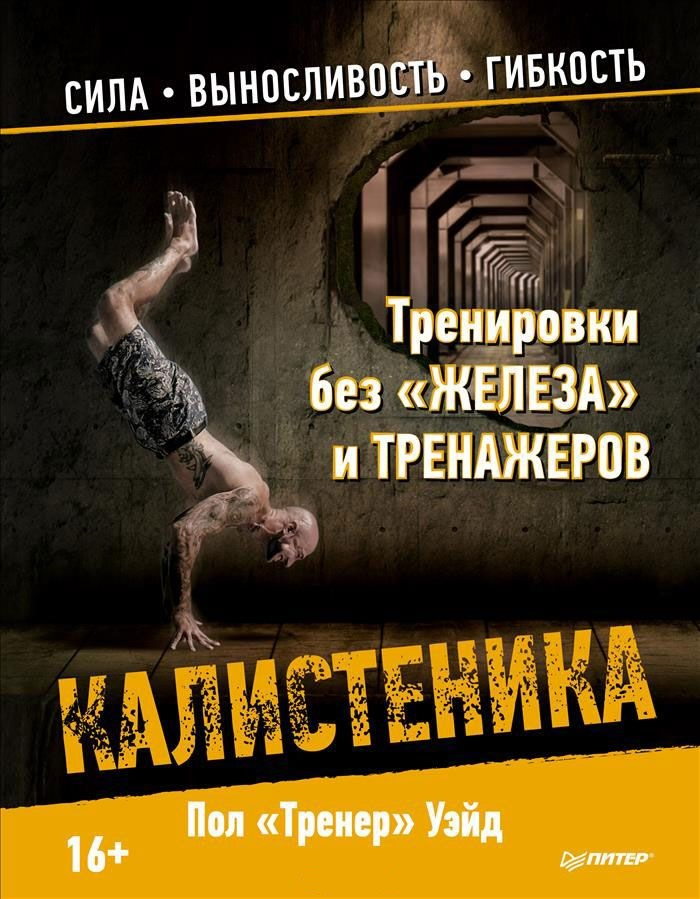
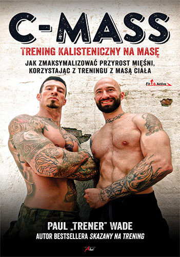
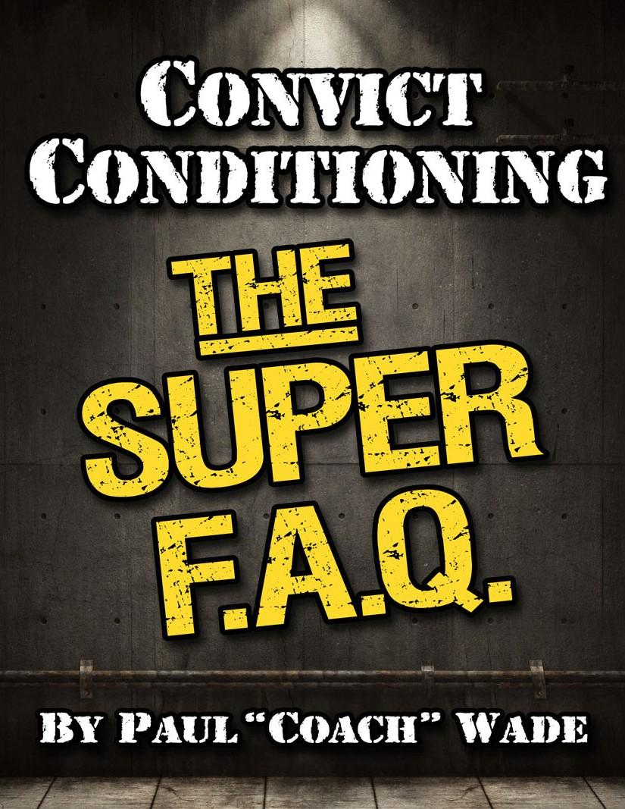

Chances are that whatever athletic level you have achieved, there are some serious gaps in your OVERALL strength program.
Gaps that stop you short of being able to claim status as a TRUE man.
Paul Wade has laid out a brilliant 6-set system of 10 progressions which allows you to master these elite levels.
And you could be starting at almost any age and in almost in any condition!
Paul Wade has given you the keys-ALL the keys you'll ever need- that will open door after door after door for you in quest for REAL physical accomplishment.
Yes, it will be the hardest work you'll ever have to do.
And yes, 97% of those who pick up Convict Conditioning, frankly, won't have the guts and the fortitude to make it.
But if you make it even half-way through Paul's Progressions, you'll be stronger than almost anyone you encounter.
If you're a 3-percenter, in particular, then this book is for you. Have at it!
Download by clicking on the book cover
Эта книга - квинтэссенция знания о физической культуре, методах тренировок, здоровье и красоте. С одной стороны, она повествует об истории возникновения методов развития силы человека и их значении, а с другой - представляет собой полноценную поэтапную систему развития физических способностей, с детальным описанием упражнений и графиками выполнения. О чем эта книга? О свободе. О выживании. О человечности. Она написана бывшим заключенным, человеком, лишившимся свободы на более чем двадцать лет. Человеком, который побывал в жерновах самых суровых тюрем Америки. Человеком, вынужденным обратиться к силе, чтобы выжить. Человеком, лишенным всего, кроме своего тела и души, - и решившим несмотря ни на что развиваться и обрести свою личную свободу, которую никто не мог у него отнять. Свободу сильного тела и крепкого духа.
Скачайте, нажав на обложку книги
Тренировочная зона 2 / Convict Conditioning 2


In his sequel, Convict Conditioning 2, Coach Wade takes us even deeper into the subtle nuances of training with the ultimate resistance tool: our bodies. With an amazing understanding of anatomy, physiology, and kinesiology, Coach Wade explains very simply how to work the smaller but just as important areas of the body such as the hands and forearms, neck and calves and obliques in serious functional ways.
Download by clicking on the book cover
Продолжение культовой книги ТРЕНИРОВОЧНАЯ ЗОНА Пола "Тренера" Уэйда посвящено продвинутым техникам тренировок с собственным весом для развития предельной силы и мышц. В книге даются упражнения для укрепления мышц пальцев и кистей, позвоночника, шеи, предплечья, икр и ступней, а также всестороннего развития суставов. Предлагаемая система упражнений включает в себя вис на полотенце одной рукой, отжимания на пальцах, "флажки", борцовский и фронтальный "мостик", комплексы по укреплению суставов и растяжке, а также отдельный раздел с советами по питанию и восстановлению после травм. Скачайте, нажав на обложку книги
Тренировочная зона 3 / Convict Conditioning 3


Третья часть легендарной "Тренировочной зоны" Пола Уэйда посвящена уникальной методике работы с собственным весом, которая известна как калистеника. Пол провел девятнадцать лет в самых страшных и славящихся своей жестокостью тюрьмах США — "Ангола" и "Мэрион". Именно там, в отсутствие специального "железа" и тренажеров, он сформировал систему упражнений для быстрого развития физической силы и выносливости. Пол Уэйд предлагает свою тренировочную систему, которая позволяет не только быстро нарастить мышечную массу, подчеркнуть рельеф мускулатуры, но и обрести настоящую силу, великолепную гибкость и растяжку. Его система одинаково эффективна для различных типов фигуры и уровня метаболизма и не зависит от уровня подготовки.Скачайте, нажав на обложку книги
Explosive Calisthenics is for those who want to be winners and survivors in the game of life—for those who want to be the Complete Package: powerful, explosive, strong, agile, quick and resilient. Traditional martial arts have always understood this necessity of training the complete package—with explosive power at an absolute premium. And resilience is revered: the joints, tendons, muscles, organs and nervous system are ALL conditioned for maximum challenge.
Really great athletes are invariably that way too: agile as all get-go, blinding speed, ungodly bursts of power, superhuman displays of strength, seemingly at will… The foundation and fundamentals center, first, around the building of power and speed. But Explosive Calisthenics does a masterful job of elucidating the skill-practices needed to safely prepare for and master the more ambitious moves. But Explosive Calisthenics doesn’t just inspire you with the dream of being the Complete Package. It gives you the complete blueprint, every detail and every progression you could possibly want and need to nail your dream and make it a reality. You, the Complete Package—it’s all laid out for you, step by step. “The first physical attribute we lose as we age is our ability to generate power. Close behind is the loss of skilled, coordinated movement. The fix is never to lose these abilities in the first place! Paul Wade’s Explosive Calisthenics is the best program for developing power and skilled movement I have seen. Just as with his previous two books, the progressions are masterful with no fancy equipment needed.
Download by clicking on the book cover
Калистеника / Calisthenics (C-mass)


Пол Уэйд провел девятнадцать лет в самых страшных и славящихся своей жестокостью тюрьмах США - "Ангола" и "Мэрион". Именно там, в отсутствие специального "железа" и тренажеров, он сформировал свою уникальную систему упражнений для быстрого развития физической силы и выносливости.
Методики, которые используют только упражнения с собственным весом, называют калистеникой. Тренировки атлетов должны быть подчинены особым правилам, чтобы не превратиться в банальный набор бессистемных и бессмысленных упражнений. Неправильная нагрузка может спровоцировать боли или неприятные ощущения в спине, плечах, локтях, коленях.
Пол Уэйд предлагает свою тренировочную систему, которая позволяет не только быстро нарастить мышечную массу, подчеркнуть рельеф мускулатуры, но и обрести настоящую силу, великолепную гибкость и растяжку. Его система одинаково эффективна для различных типов фигуры и уровня метаболизма и не зависит от уровня подготовки.Скачайте, нажав на обложку книги
Is it really possible to add significant extra muscle-bulk to your frame using bodyweight exercise only? The answer, according to calisthenics guru and bestselling Convict Conditioning author Paul Wade, is a resounding Yes. Legendary strongmen and savvy modern bodyweight bodybuilders both, have added stacks of righteous beef to their physique--using just the secrets Paul Wade reveals in this bible-like guide to getting as strong AND as big as you could possibly want, using nothing but your own body. Paul Wade's trenchant, visceral style blazes with hard-won body culture insight, tactics, strategies and tips. C-Mass is the ultimate blueprint for getting huge naturally without free weights, machine supplements or--God forbid--steroids. With C-Mass, Paul Wade further cements his position as the preeminent modern authority on how to build extraordinary power and strength with bodyweight exercise only. CONTENTS: 1. Bodyweight Muscle? No Problem! 2. The Ten Commandments of Calisthenics Mass 3. "Coach" Wade's Bodypart Tactics 4. Okay. Now Gimme a Program 5. Troubleshooting Muscle-Growth: The FAQ 6. The Democratic Alternative...How To Get As Powerful As Possible Without Gaining A Pound 7. BONUS CHAPTER: Supercharging Your Hormonal Profile Get the expert's guide to build phenomenal amounts of natural muscle mass and discover how to: • Add 20-30+ pounds of solid muscle to your frame--with perfect proportions • Reshape your arms with 2-3 inches of gnarly beef • Triple the size of your pecs and lats • Thicken and harden your abdominal wall into a classic six-pack • Throw a thick, healthy vein onto your biceps • Generate hard, sculpted quads and hamstrings that would be the envy of an Olympic sprinter • Build true "diamond" calves • Stand head and shoulders above the next 99% of natural bodybuilders in looks, strength and power • Boost testosterone naturally to bull-like levels
Download by clicking on the book cover
Super F.A.Q.
